يهدف مشروع ShopFlow إلى بناء نظام خلفي (Backend) متكامل لمنظومة تجارة إلكترونية، مع التركيز على المتطلبات غير الوظيفية المتعلقة بالبرمجة المتوازية والأداء العالي. يُغطي هذا التقرير المتطلبات الخمسة الأولى من متطلبات المشروع، مع شرح مفصّل للحلول المعتمارية والكود المصدري المستخدم لتحقيق كل متطلب.
تم بناء النظام باستخدام إطار عمل Spring Boot 3.4.3 مع Java 17، ويعتمد على PostgreSQL 16 كقاعدة بيانات رئيسية، وRedis 7 لإدارة الرموز والتخزين المؤقت، وNginx كموزع أحمال، وDocker Compose لتنسيق الحاويات. كما تم دمج Prometheus وGrafana لمراقبة الأداء في الزمن الحقيقي.
(Concurrent Access & Data Integrity)
يتطلب النظام آلية تسمح لعدة مستخدمين بتعديل نفس المورد (مثل كمية المنتج في المخزون) دون حدوث تضارب أو فقدان بيانات. تم تطبيق نهج مزدوج يجمع بين القفل المتفائل للعمليات العادية والقفل المتشائم للعمليات ذات التضارب العالي (مثل التخفيضات السريعة).
يعتمد القفل المتفائل على افتراض أن التضارب نادر الحدوث. يُضاف حقل @Version لكيان المنتج، يزداد تلقائياً مع كل عملية تحديث. إذا حاول خيطان تعديل نفس السجل في الوقت ذاته، يفشل الثاني بخطأ OptimisticLockException.
src/main/java/.../product/entity/Product.java
@Entity
@Table(name = "products")
public class Product extends BaseEntity {
private String name;
private int stockQuantity;
private BigDecimal price;
@Version
@Column(nullable = false)
@Builder.Default
private Long version = 0L;
}
عند تنفيذ عملية التحديث، يُولّد JPA استعلام SQL يتضمن شرط الإصدار:
UPDATE products SET stock_quantity = ?, version = version + 1 WHERE id = ? AND version = ?
إذا لم يتطابق الإصدار (أي أن خيطاً آخر عدّل السجل)، لا يُحدَّث أي سطر ويُطرح استثناء. تتعامل استراتيجية الشراء المتفائلة مع هذا الاستثناء عبر إعادة المحاولة:
src/main/java/.../product/strategy/OptimisticPurchaseStrategy.java
@Component("optimisticPurchase")
public class OptimisticPurchaseStrategy implements PurchaseStrategy {
private static final int MAX_RETRIES = 3;
@Override
@Transactional
public Product purchase(UUID productId, int quantity) {
int attempt = 0;
while (attempt < MAX_RETRIES) {
try {
return attemptPurchase(productId, quantity);
} catch (ObjectOptimisticLockingFailureException ex) {
attempt++;
log.warn("Optimistic lock conflict - attempt {}/{}", attempt, MAX_RETRIES);
}
}
throw new ConflictException("Could not complete purchase after " + MAX_RETRIES + " retries");
}
private Product attemptPurchase(UUID productId, int quantity) {
Product product = productRepository.findById(productId)
.orElseThrow(() -> new ResourceNotFoundException("Product not found"));
if (product.getStockQuantity() < quantity) {
throw new InsufficientStockException("Not enough stock");
}
product.setStockQuantity(product.getStockQuantity() - quantity);
return productRepository.save(product);
}
}
في حالة التخفيضات السريعة (Flash Sales)، يكون التضارب شبه مؤكد مع عشرات المستخدمين يتنافسون على كمية محدودة. هنا يُستخدم القفل المتشائم الذي يقفل السجل على مستوى قاعدة البيانات فوراً باستخدام SELECT ... FOR UPDATE.
src/main/java/.../flashsale/repository/FlashSaleRepository.java
@Lock(LockModeType.PESSIMISTIC_WRITE)
@Query("SELECT f FROM FlashSale f WHERE f.id = :id")
Optional<FlashSale> findByIdWithLock(@Param("id") UUID id);
يُترجم هذا إلى استعلام SQL:
SELECT * FROM flash_sales WHERE id = ? FOR UPDATE
أي خيط آخر يحاول قراءة نفس السجل سيُحظر تلقائياً حتى ينتهي الخيط الأول من المعاملة (COMMIT أو ROLLBACK).
src/main/java/.../product/strategy/PessimisticPurchaseStrategy.java
@Component("pessimisticPurchase")
public class PessimisticPurchaseStrategy implements PurchaseStrategy {
@Override
@Transactional
public Product purchase(UUID flashSaleId, int quantity) {
FlashSale flashSale = flashSaleRepository.findByIdWithLock(flashSaleId)
.orElseThrow(() -> new ResourceNotFoundException("Flash sale not found"));
if (flashSale.getRemainingQuantity() < quantity) {
throw new InsufficientStockException("Flash sale sold out");
}
flashSale.setRemainingQuantity(flashSale.getRemainingQuantity() - quantity);
flashSaleRepository.save(flashSale);
return flashSale.getProduct();
}
}
تم تطبيق نمط التصميم Strategy لاختيار آلية القفل المناسبة حسب نوع الطلب. في خدمة الطلبات، يتم تفويض اختيار القفل إلى الاستراتيجية المناسبة:
// الشراء العادي → قفل متفائل Product product = optimisticStrategy.purchase(itemReq.getProductId(), itemReq.getQuantity()); // تخفيضات سريعة → قفل متشائم Product product = pessimisticStrategy.purchase(flashSaleId, quantity);
تم اختبار آلية القفل عبر سكربتات Bash تُرسل طلبات متزامنة لمحاكاة سيناريوهات الاستخدام الحقيقي. تم اختبار الأداء مع القفل وبدون القفل لتوضيح أهمية آلية الحماية.
إرسال 10 طلبات شراء متزامنة لمنتج iPhone 16 Pro (المخزون = 50). النتيجة: المخزون انخفض بشكل صحيح، مع ظهور رسائل OptimisticLockingFailureException في السجلات عند حدوث تضارب، وتم إعادة المحاولة تلقائياً.
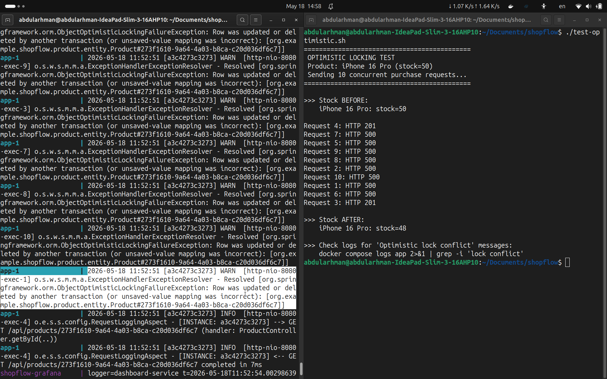
إرسال 15 طلب شراء متزامن لتخفيض سريع Samsung Galaxy S25 (الكمية = 10). النتيجة: نجحت 10 طلبات فقط ورُفضت 5 بسبب نفاد الكمية — حماية كاملة من البيع الزائد.
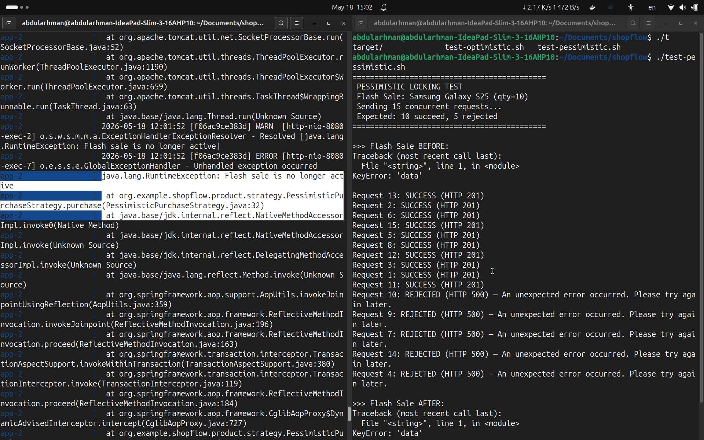
لإثبات أهمية آليات القفل، تم إزالة @Version من كيان المنتج وإزالة @Lock من الاستعلام وآلية إعادة المحاولة. النتائج أظهرت فقدان بيانات كارثي:
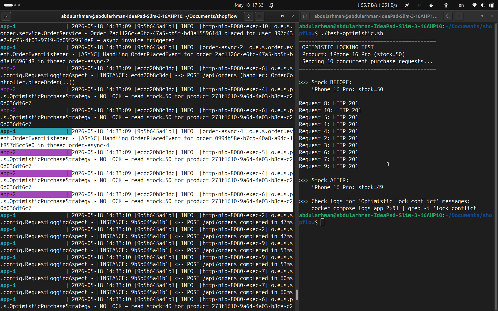
في السجلات نلاحظ أن جميع الخيوط قرأت نفس القيمة stock=50 في الوقت ذاته، وكل خيط طرح منها 1 وحفظ 49. الكتابة الأخيرة هي التي سادت (Last Write Wins)، مما أدى لفقدان 9 عمليات شراء.
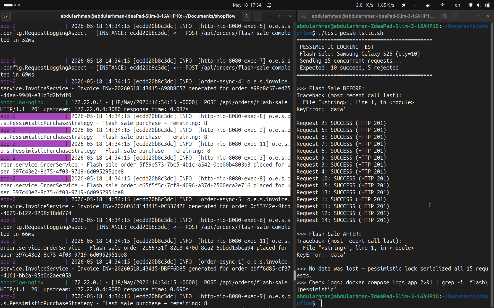
(Resource Management & Capacity Control)
يتطلب النظام التحكم في عدد العمليات المتوازية لمنع استنزاف الموارد (انهيار) أو تقليلها بشكل يبطئ الاستجابة. تم تطبيق هذا المتطلب على ثلاثة مستويات: اتصالات قاعدة البيانات، اتصالات Redis، ومجمعات الخيوط.
HikariCP هو مجمع اتصالات عالي الأداء يأتي مدمجاً مع Spring Boot. تم ضبطه للسماح بحد أقصى 10 اتصالات متزامنة لقاعدة البيانات:
src/main/resources/application.yml
spring:
datasource:
hikari:
pool-name: HikariPool-AuthDB
maximum-pool-size: 10 # الحد الأقصى للاتصالات المتزامنة
minimum-idle: 5 # الحد الأدنى للاتصالات الجاهزة
idle-timeout: 300000 # 5 دقائق - إغلاق الاتصالات الخاملة
connection-timeout: 30000 # 30 ثانية - فشل سريع بدلاً من الانتظار اللانهائي
max-lifetime: 1800000 # 30 دقيقة - إعادة تدوير الاتصالات
leak-detection-threshold: 60000 # تحذير إذا بقي اتصال مفتوحاً أكثر من 60 ثانية
| المعامل | القيمة | الهدف |
|---|---|---|
| maximum-pool-size | 10 | منع إغراق PostgreSQL بعدد كبير من الاتصالات |
| minimum-idle | 5 | ضمان جاهزية 5 اتصالات دائماً لتقليل زمن الاستجابة |
| connection-timeout | 30 ثانية | فشل سريع بدلاً من حجز الخيط إلى ما لا نهاية |
| leak-detection-threshold | 60 ثانية | كشف تسريب الاتصالات (نسيان إغلاقها) |
يُستخدم Redis لإبطال رموز JWT وتخزين البيانات المؤقتة. تم ضبط مجمع Lettuce لتحديد عدد الاتصالات المتزامنة:
spring:
data:
redis:
lettuce:
pool:
max-active: 10 # الحد الأقصى للاتصالات المتزامنة
max-idle: 5 # اتصالات خاملة جاهزة
min-idle: 2 # اتصالات دافئة دائماً
max-wait: 2000ms # فشل بعد ثانيتين إذا لم يتوفر اتصال
تم تعريف مجمعَيْ خيوط منفصلين لعزل الموارد بين المهام المختلفة ومنع تأثير نوع من المهام على نوع آخر:
src/main/java/.../shared/config/AsyncConfig.java
@Configuration
@EnableAsync
@EnableScheduling
public class AsyncConfig {
// مجمع خيوط لمعالجة أحداث الطلبات (فواتير، إشعارات)
@Bean(name = "orderExecutor")
public Executor orderExecutor() {
ThreadPoolTaskExecutor executor = new ThreadPoolTaskExecutor();
executor.setCorePoolSize(5); // 5 خيوط أساسية
executor.setMaxPoolSize(20); // يتوسع حتى 20 خيط تحت الضغط
executor.setQueueCapacity(100); // طابور يستوعب 100 مهمة
executor.setThreadNamePrefix("order-async-");
executor.setRejectedExecutionHandler(
new ThreadPoolExecutor.CallerRunsPolicy() // تدهور أنيق
);
executor.initialize();
return executor;
}
// مجمع خيوط مخصص للمهام الدفعية (معزول عن حركة الطلبات)
@Bean(name = "batchExecutor")
public Executor batchExecutor() {
ThreadPoolTaskExecutor executor = new ThreadPoolTaskExecutor();
executor.setCorePoolSize(2);
executor.setMaxPoolSize(5);
executor.setQueueCapacity(10);
executor.setThreadNamePrefix("batch-job-");
executor.setRejectedExecutionHandler(
new ThreadPoolExecutor.CallerRunsPolicy()
);
executor.initialize();
return executor;
}
}
تم رصد حالة جميع الموارد عبر لوحة مراقبة Grafana أثناء تنفيذ اختبارات التزامن. تُظهر اللقطات التالية حالة مجمعات الخيوط واتصالات قاعدة البيانات لكلا النسختين:
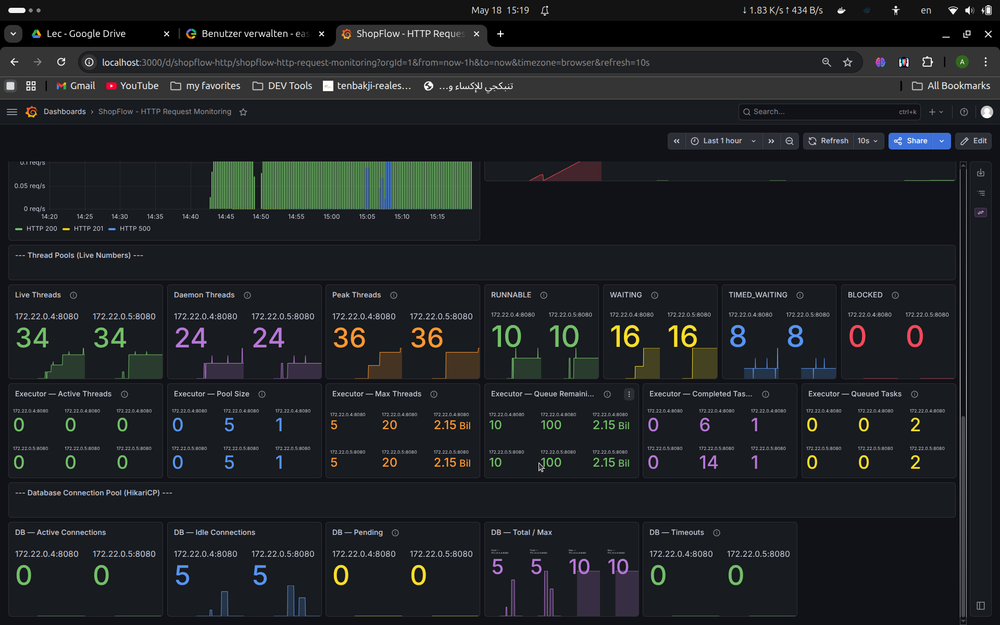
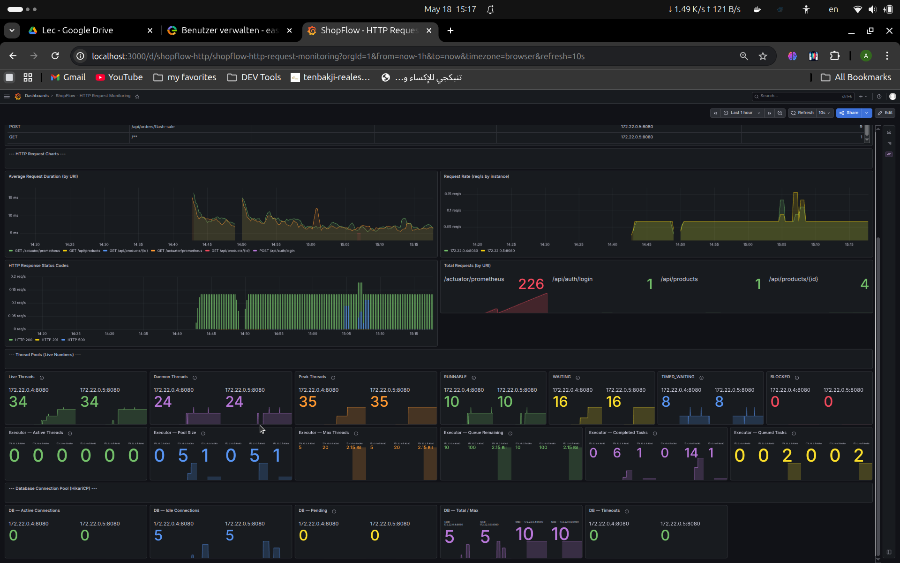
(Asynchronous Queues)
يتطلب نقل المهام التي لا يحتاج المستخدم لانتظارها (مثل إصدار الفواتير أو إرسال الإشعارات) خارج المسار الرئيسي للطلب. بذلك يحصل المستخدم على استجابة فورية بينما تُنفَّذ المهام الثقيلة في الخلفية.
عند إتمام طلب شراء، يُنشر حدث OrderPlacedEvent عبر نظام أحداث Spring. يلتقطه مستمع غير متزامن يعمل في خيط منفصل:
src/main/java/.../order/service/OrderService.java
@Transactional
public Order placeOrder(UUID userId, PlaceOrderRequest request) {
// ... إنشاء الطلب وتحديث المخزون ...
order = orderRepository.save(order);
// نشر الحدث — المستمع يعالج الفاتورة بشكل غير متزامن
eventPublisher.publishEvent(new OrderPlacedEvent(this, order));
log.info("Order placed - async invoice triggered");
return order; // الاستجابة تُرسل فوراً قبل إنشاء الفاتورة
}
src/main/java/.../order/event/OrderEventListener.java
@Component
public class OrderEventListener {
@Async("orderExecutor") // يعمل في مجمع خيوط الطلبات
@EventListener
public void onOrderPlaced(OrderPlacedEvent event) {
Order order = event.getOrder();
log.info("[ASYNC] Handling OrderPlacedEvent in thread {}",
Thread.currentThread().getName());
try {
invoiceService.generateInvoice(order);
log.info("[ASYNC] Invoice generated for order {}", order.getId());
} catch (Exception ex) {
log.error("[ASYNC] Failed to generate invoice for order {}", order.getId());
}
}
}
جميع عمليات إرسال البريد الإلكتروني (التحقق من الحساب، إعادة تعيين كلمة المرور) تتم بشكل غير متزامن حتى لا يُحظر الخيط الرئيسي بانتظار خادم SMTP:
src/main/java/.../auth/service/EmailService.java
@Service
public class EmailService {
@Async // يعمل في خيط منفصل
public void sendVerificationEmail(String to, String token) {
String verificationUrl = baseUrl + "/api/auth/verify-email?token=" + token;
sendHtmlEmail(to, "Verify your email address", body);
}
@Async
public void sendPasswordResetEmail(String to, String token) {
String resetUrl = baseUrl + "/api/auth/reset-password?token=" + token;
sendHtmlEmail(to, "Reset your password", body);
}
}
عند تسجيل الخروج، يتم إدراج رمز JWT في القائمة السوداء عبر Redis مع مدة انتهاء تلقائية (TTL)، مما يمنع إعادة استخدام الرمز:
public void blacklist(String jti, long remainingMs) {
String key = "jwt:blacklist:" + jti;
redisTemplate.opsForValue().set(key, "1", Duration.ofMillis(remainingMs));
// Redis يحذف المفتاح تلقائياً بعد انتهاء المدة
}
(Batch Processing)
يتطلب برمجة وظيفة خلفية تقوم بجرد المبيعات اليومية ومعالجتها كدفعات (Chunks) لزيادة سرعة الأداء. تم تحقيق ذلك عبر مهمة مجدولة تستخدم الترقيم الصفحي (Pagination) لتقسيم البيانات.
يتم تشغيل تقرير المبيعات اليومية تلقائياً عند منتصف الليل بتوقيت UTC، في مجمع خيوط مخصص ومعزول عن حركة الطلبات:
src/main/java/.../report/scheduler/DailySalesJob.java
@Component
public class DailySalesJob {
@Async("batchExecutor") // مجمع خيوط مخصص (2 أساسي، 5 حد أقصى)
@Scheduled(cron = "0 0 0 * * *", zone = "UTC") // كل يوم عند منتصف الليل
public void runDailyReport() {
LocalDate yesterday = LocalDate.now().minusDays(1);
log.info("[BATCH] Starting daily sales report for {} in thread {}",
yesterday, Thread.currentThread().getName());
reportService.generateReportForDate(yesterday);
}
}
بدلاً من تحميل جميع الطلبات في الذاكرة دفعة واحدة (مما قد يسبب OutOfMemoryError)، تتم المعالجة على دفعات بحجم 500 سجل باستخدام Pageable:
src/main/java/.../report/service/DailySalesReportService.java
@Service
public class DailySalesReportService {
private static final int CHUNK_SIZE = 500;
@Transactional
public void generateReportForDate(LocalDate date) {
// التحقق من عدم وجود تقرير مُسبق (idempotency)
if (reportRepository.existsByReportDate(date)) {
log.info("Report for {} already exists - skipping", date);
return;
}
DailySalesReport report = DailySalesReport.builder()
.reportDate(date)
.status(ReportStatus.PROCESSING)
.build();
report = reportRepository.save(report);
int page = 0;
int totalOrders = 0;
BigDecimal totalRevenue = BigDecimal.ZERO;
Page<Order> chunk;
try {
do {
// جلب CHUNK_SIZE سجل في كل مرة
chunk = orderRepository.findByStatusAndCreatedAtBetween(
OrderStatus.CONFIRMED, from, to,
PageRequest.of(page, CHUNK_SIZE)
);
for (Order order : chunk.getContent()) {
totalRevenue = totalRevenue.add(order.getTotalAmount());
}
totalOrders += chunk.getNumberOfElements();
log.info("Batch chunk {} processed - {} orders", page, chunk.getNumberOfElements());
page++;
} while (chunk.hasNext());
report.setTotalOrders(totalOrders);
report.setTotalRevenue(totalRevenue);
report.setStatus(ReportStatus.COMPLETED);
reportRepository.save(report);
} catch (Exception ex) {
report.setStatus(ReportStatus.FAILED);
reportRepository.save(report);
log.error("Daily report for {} failed: {}", date, ex.getMessage());
}
}
}
@Scheduled(fixedRate = 3600000) // كل ساعة
@Transactional
public void cleanupStaleTokens() {
refreshTokenRepository.deleteExpiredTokens(Instant.now());
refreshTokenRepository.deleteRevokedTokensBefore(now.minus(24, ChronoUnit.HOURS));
log.info("Token cleanup completed");
}
تم اختبار المعالجة على دفعات بحجم 50 سجل لـ 144 طلب. تُظهر السجلات أن كلتا النسختين عالجتا 3 دفعات (Chunk 0: 50 طلب، Chunk 1: 50 طلب، Chunk 2: 44 طلب) بشكل متوازٍ:
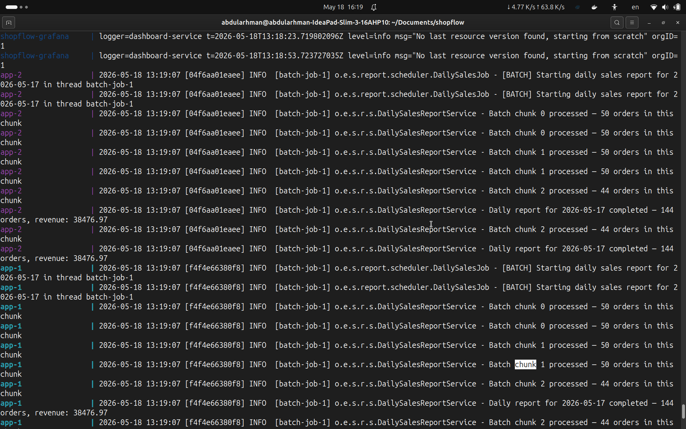
لإثبات أهمية نهج الدفعات، تم تعديل الكود لتحميل جميع الطلبات دفعة واحدة في الذاكرة. تُظهر السجلات الرسالة "Fetching ALL orders at once (no chunking)" — في بيئة إنتاجية مع ملايين السجلات، سيؤدي هذا النهج إلى OutOfMemoryError:
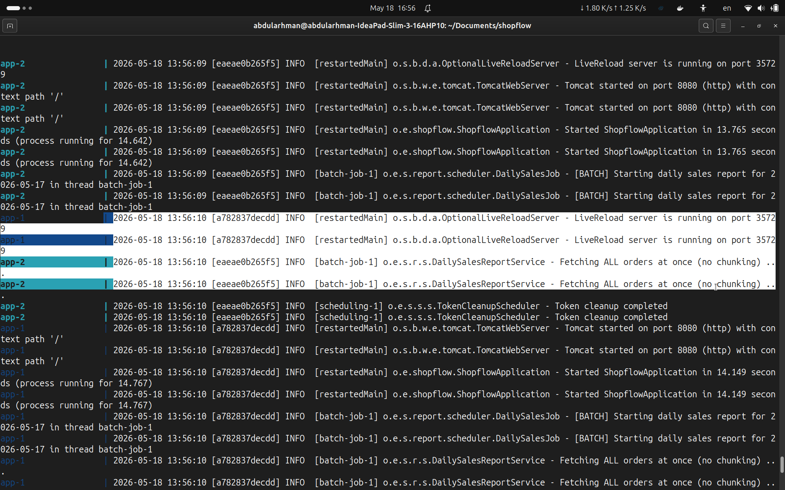
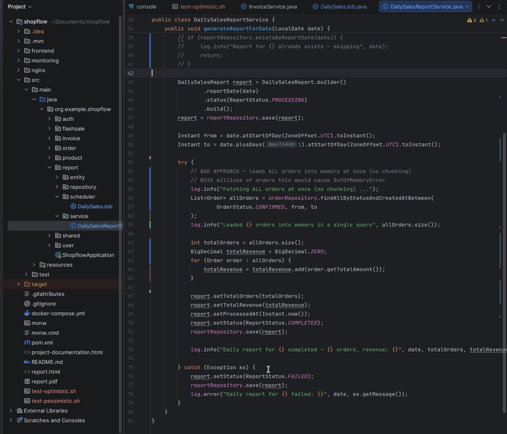
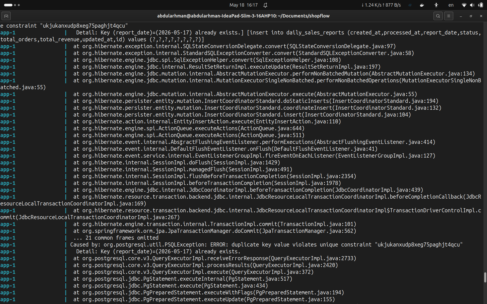
(Load Distribution)
يتطلب محاكاة توزيع الطلبات على أكثر من خادم مع توضيح وتبرير استراتيجية التوزيع المستخدمة. تم تحقيق ذلك عبر Nginx كموزع أحمال أمام نسختين من تطبيق Spring Boot، مُدارة بواسطة Docker Compose.
يتم تشغيل نسختين من التطبيق عبر أمر التوسيع في Docker Compose:
docker compose up --scale app=2
هذا يُنشئ حاويتين متطابقتين (app-1 و app-2) خلف شبكة Docker واحدة. يتعامل Nginx مع جميع الطلبات الواردة على المنفذ 80 ويوزعها بين النسختين:
docker-compose.yml (المقتطفات الأساسية):
services:
app:
image: shopflow:latest
# بدون container_name — ضروري للتوسيع
# بدون ports — Nginx يتعامل مع الوصول الخارجي
depends_on:
postgres:
condition: service_healthy
redis:
condition: service_healthy
nginx:
image: nginx:alpine
ports:
- "80:80"
volumes:
- ./nginx/nginx.conf:/etc/nginx/conf.d/default.conf:ro
depends_on:
- app
تم اعتماد استراتيجية Round-Robin (التناوب الدوري) لتوزيع الطلبات بالتساوي بين النسختين. يعتمد التطبيق على نظام DNS الداخلي لـ Docker الذي يُعيد عناوين IP مختلفة عند كل استعلام لاسم الخدمة app.
النقطة الحرجة: يجب استخدام متغير في proxy_pass لإجبار Nginx على إعادة الاستعلام عن DNS في كل طلب (بدون ذلك يُخزّن Nginx العنوان مرة واحدة عند الإقلاع ويُرسل جميع الطلبات لنسخة واحدة):
nginx/nginx.conf
server {
listen 80;
server_name localhost;
# مُحلل DNS الداخلي لـ Docker — إعادة الاستعلام كل 5 ثوانٍ
resolver 127.0.0.11 valid=5s ipv6=off;
# حجب نقاط الوصول الداخلية من الخارج
location /actuator {
deny all;
return 403;
}
location / {
# المتغير يُجبر إعادة استعلام DNS في كل طلب
set $backend http://app:8080;
proxy_pass $backend;
proxy_http_version 1.1;
proxy_set_header Connection "";
proxy_set_header Host $host;
proxy_set_header X-Real-IP $remote_addr;
proxy_set_header X-Forwarded-For $proxy_add_x_forwarded_for;
proxy_set_header X-Forwarded-Proto $scheme;
}
}
لإثبات أن التوزيع يعمل فعلياً، تم تطبيق مفهوم البرمجة الموجهة للجوانب (AOP) لاعتراض كل طلب HTTP وتسجيل مُعرّف النسخة التي عالجته:
src/main/java/.../shared/config/RequestLoggingAspect.java
@Aspect
@Component
@Slf4j
public class RequestLoggingAspect {
@Value("${HOSTNAME:single}")
private String instanceId;
@Around("@within(org.springframework.web.bind.annotation.RestController)")
public Object logRequest(ProceedingJoinPoint joinPoint) throws Throwable {
HttpServletRequest request = ((ServletRequestAttributes)
RequestContextHolder.getRequestAttributes()).getRequest();
String method = request.getMethod();
String uri = request.getRequestURI();
log.info("[INSTANCE: {}] --> {} {} (handler: {})",
instanceId, method, uri, joinPoint.getSignature().toShortString());
long start = System.currentTimeMillis();
Object result = joinPoint.proceed();
long duration = System.currentTimeMillis() - start;
log.info("[INSTANCE: {}] <-- {} {} completed in {}ms",
instanceId, method, uri, duration);
return result;
}
}
عند تشغيل docker compose logs app وإرسال عدة طلبات، تظهر السجلات بالتناوب بين النسختين:
app-1 | [INSTANCE: aa087c423ab6] --> GET /api/products completed in 13ms app-2 | [INSTANCE: 32433b18c8ce] --> GET /api/products completed in 13ms app-1 | [INSTANCE: aa087c423ab6] --> GET /api/products completed in 2ms app-2 | [INSTANCE: 32433b18c8ce] --> GET /api/products completed in 3ms
لمراقبة أداء الطلبات ومدتها في الزمن الحقيقي، تم دمج Prometheus لجمع المقاييس وGrafana لعرضها بصرياً. يستخدم التطبيق Spring Boot Actuator مع Micrometer لتصدير المقاييس بتنسيق Prometheus:
management:
endpoints:
web:
exposure:
include: health,info,prometheus
metrics:
tags:
application: shopflow
distribution:
percentiles-histogram:
http.server.requests: true
percentiles:
http.server.requests: 0.5,0.95,0.99
يقوم Prometheus بجمع المقاييس من كلتا النسختين تلقائياً عبر اكتشاف DNS:
scrape_configs:
- job_name: 'shopflow'
metrics_path: '/actuator/prometheus'
dns_sd_configs:
- names: ['app']
type: 'A'
port: 8080
تم إعداد لوحة مراقبة Grafana مُسبقة التهيئة تعرض:
تُظهر لوحة المراقبة توزيع الأحمال بشكل متساوٍ بين النسختين، مع تفاصيل كل مسار API ومدة الاستجابة:
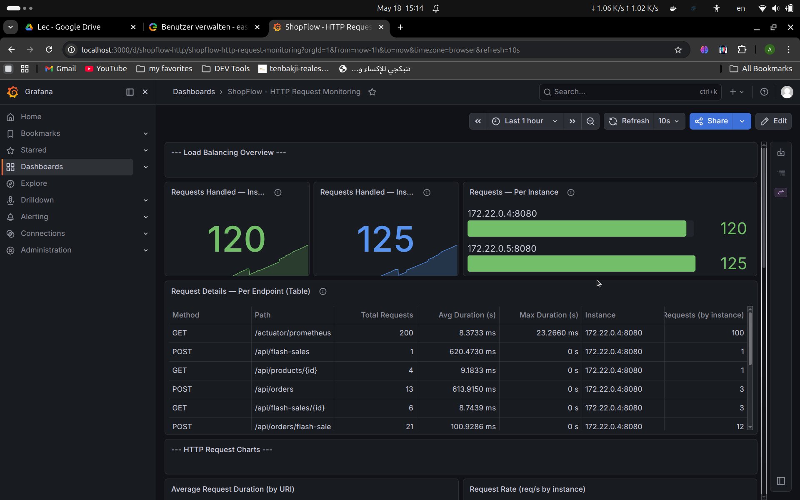
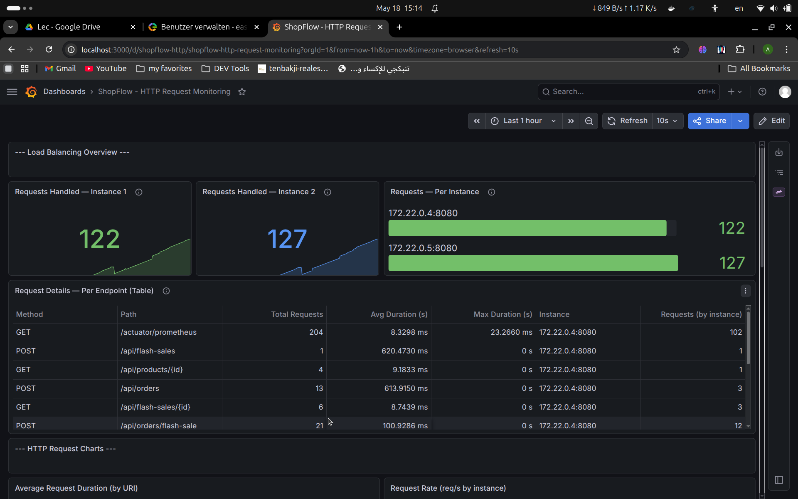
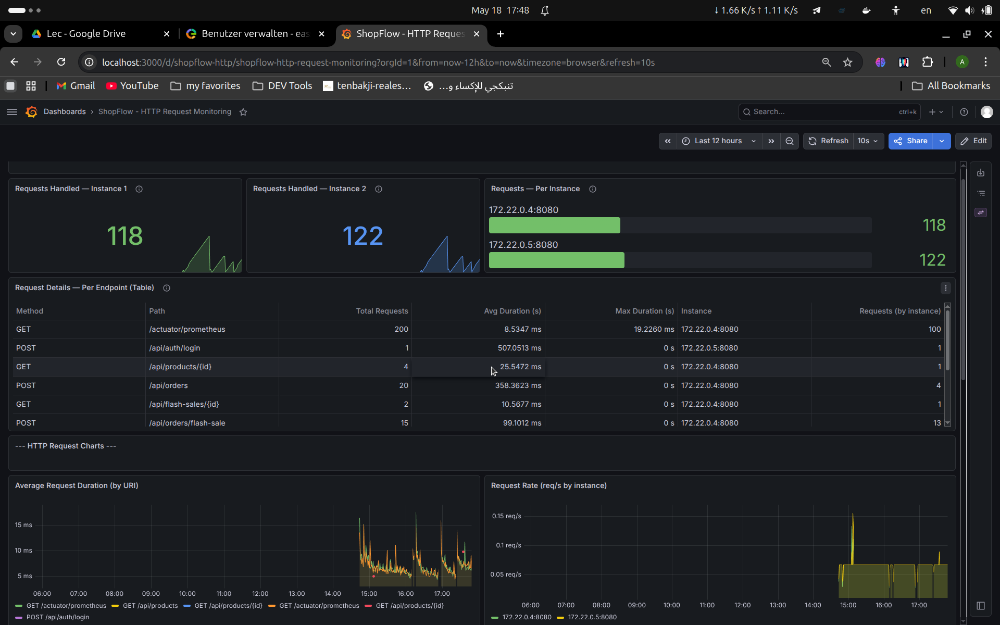
لإثبات أن النظام يصمد تحت التزامن العالي دون فقدان أيّ بيانات، تم إجراء اختبار ضغط باستخدام Apache JMeter (عبر صورة Docker الرسمية) يحاكي 100 مستخدم يرسلون طلب إنشاء طلب شراء (POST /api/orders) في اللحظة نفسها دفعةً واحدة.
تم تشغيل الاختبار عبر السكربت loadtest/bench.sh بالإعدادات التالية:
WRITE_USERS=100 LOOPS=1 RAMPUP=0 ./loadtest/bench.sh integrity
WRITE_USERS=100) — كل مستخدم يرسل طلباً واحداً فقط (LOOPS=1)، أي 100 طلب بالضبط.RAMPUP=0) — تنطلق كل الخيوط في اللحظة نفسها لتوليد أقصى تنافس (Thundering Herd).
عند تزامن عدّة طلبات على المنتج نفسه، يرفض القفل المتفائل (@Version + إعادة المحاولة) الطلبات المتضاربة بدلاً من إفساد البيانات. الطلب المرفوض هو رفضٌ نظيف (لا يغيّر المخزون)، وليس فقداناً للبيانات. بعد انتهاء الاختبار تم التحقق من قاعدة البيانات للتأكد من تحقق الثابت التالي:
(المخزون المُباع) = (مجموع كميات عناصر الطلبات) = (عدد الطلبات المؤكدة)
أي أن كل وحدة نقصت من المخزون تقابلها بالضبط عنصرُ طلبٍ واحد وطلبٌ مؤكّدٌ واحد — لا بيع زائد، ولا فقدان أو تكرار لأي وحدة.
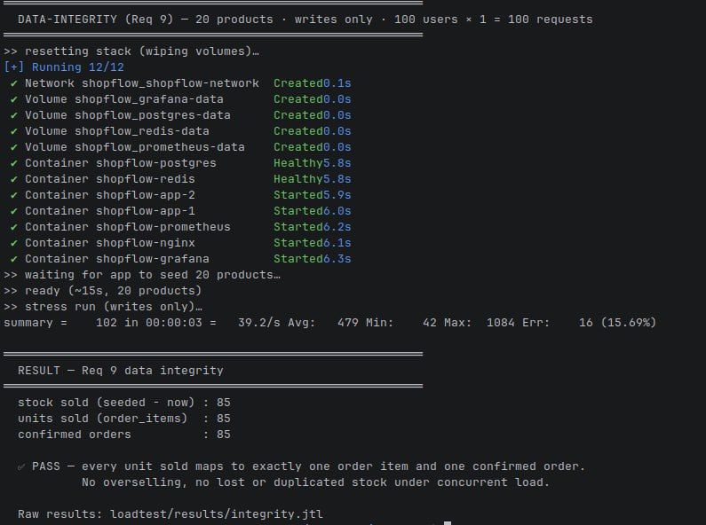
يجمع هذا المتطلب بين ثلاثة أمور مترابطة في تجربة واحدة: التخزين المؤقت (المتطلب 6) كتحسين، واختبار الضغط (المتطلب 9) كأداة قياس، والمقارنة قبل/بعد (المتطلب 10) كتحليل لعنق الزجاجة. كما تراقب لوحات Grafana (المتطلب 8) حالة النظام أثناء التجربة.
مسار قراءة المنتجات (GET /api/products) هو المسار الأكثر استخداماً. بدلاً من الوصول إلى PostgreSQL في كل طلب، يتم تخزين النتيجة في Redis وخدمتها من الذاكرة. تُخزَّن كائنات ProductResponse (وليس كيانات JPA) بمدة صلاحية 60 ثانية، ويتم إبطال التخزين عند أي تغيّر في المخزون حتى لا تُقدَّم بيانات قديمة.
@Cacheable(value = "products", key = "'all'") // قراءة: تُخدَم من Redis
public List<ProductResponse> findAll() { ... }
@CacheEvict(value = "products", allEntries = true) // كتابة: تُبطِل التخزين
public Product create(Product product) { ... }
يتم التحكم بالتخزين عبر الإعداد spring.cache.type: القيمة redis تُفعّله، والقيمة none تعطّله. هذا يسمح بتشغيل نفس صورة التطبيق في الحالتين «قبل» و«بعد» — لا يتغيّر سوى الإعداد، مما يضمن مقارنة عادلة.
باستخدام أداة الضغط نفسها (JMeter)، تم توليد حِمل قراءة على كتالوج كبير (5000 منتج لجعل القراءة «مكلفة» فعلاً) مرتين متطابقتين:
spring.cache.type=none — كل طلب يصل إلى قاعدة البيانات.spring.cache.type=redis — الطلبات المتكررة تُخدَم من Redis.
يتم تشغيل التجربة بأمر واحد: ./loadtest/bench.sh cache.
أظهرت المقارنة تحسّناً كبيراً عند تفعيل التخزين المؤقت — خاصةً في ذيل التوزيع (p95/p99) وفي عدد الطلبات في الثانية، مع اختفاء الأخطاء الناتجة عن إشباع النظام. الأرقام الدقيقة تظهر في الشكلين أدناه.
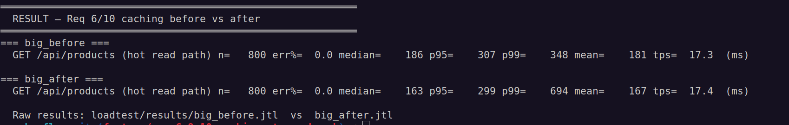
bench.sh cache — مقارنة زمن الاستجابة (p95/p99) وعدد الطلبات/ثانية ونسبة الأخطاء، بدون تخزين مقابل مع التخزين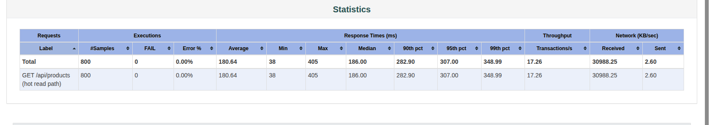
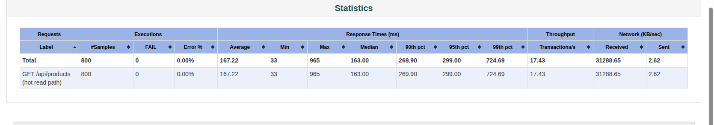
تحليل عنق الزجاجة (المتطلب 10): العائق الحقيقي هو مجمع اتصالات قاعدة البيانات (HikariCP، الحد الأقصى = 10). تحت الحِمل العالي، تتنافس القراءات غير المخزّنة على هذه الاتصالات العشرة فتتراكم الطلبات وتنفجر أزمنة الاستجابة في الذيل (p99). عند تفعيل Redis، تُخدَم القراءات المتكررة من الذاكرة وتتحرّر اتصالات قاعدة البيانات، فينخفض p99 بشكل حادّ ويرتفع عدد الطلبات في الثانية. هذا بالضبط هو تحديد عنق الزجاجة وإثبات أثر الحل عليه.
إنشاء الطلب عمليةٌ مركّبة: خصم المخزون لعدّة منتجات، ثم إنشاء الطلب، ثم إنشاء عناصره. يجب أن تتمّ هذه الخطوات بالكامل أو لا تتمّ إطلاقاً — وهذه هي خاصية الذرّية (Atomicity) من خصائص قواعد بيانات ACID. تتحقق هذه الخاصية عبر التعليق التوضيحي @Transactional الذي يجعل كل ما بداخل الدالة معاملةً واحدة.
@Transactional // كل ما بالداخل معاملة واحدة — ذرّية
public Order placeOrder(UUID userId, PlaceOrderRequest request) {
User user = resolveUser(userId);
List<OrderItem> items = new ArrayList<>();
for (var itemReq : request.getItems()) {
// خصم المخزون مع القفل المتفائل — قد يرمي استثناءً إن نفد المخزون
Product product = optimisticStrategy.purchase(
itemReq.getProductId(), itemReq.getQuantity());
items.add(/* ... عنصر الطلب ... */);
}
Order order = orderRepository.save(/* ... الطلب ... */);
order.getItems().addAll(items);
orderRepository.save(order);
eventPublisher.publishEvent(new OrderPlacedEvent(this, order)); // فوترة غير متزامنة
return order;
} // أي استثناء بالأعلى ⇐ تراجع كامل (Rollback)
مثال على الأهمية: لو طلب العميل ثلاثة منتجات ونفد مخزون الثالث، فبدون المعاملة كان سيُخصم مخزون أوّل منتجين ثم تفشل العملية — تاركةً بيانات غير متّسقة (مخزون نقص دون طلب مقابل). مع @Transactional يُلغى كل شيء تلقائياً: لا يُنشأ طلب، ولا يُخصم أيّ مخزون.
هذه الذرّية — مجتمعةً مع آليات القفل (المتطلب 7، الموضّحة في القسم 2) — هي ما يضمن النتيجة التي رأيناها في القسم 7: كل طلب ناجح متّسقٌ تماماً، دون بيع زائد أو فقدان بيانات تحت التزامن العالي.
| المتطلب | التقنية / النمط | الملفات الرئيسية |
|---|---|---|
| 1. حماية البيانات من التضارب | Optimistic Locking (@Version) Pessimistic Locking (SELECT FOR UPDATE) Strategy Pattern |
Product.java OptimisticPurchaseStrategy.java PessimisticPurchaseStrategy.java FlashSaleRepository.java |
| 2. إدارة الموارد الحاسوبية | HikariCP Connection Pool Lettuce Redis Pool ThreadPoolTaskExecutor CallerRunsPolicy |
application.yml AsyncConfig.java |
| 3. المعالجة غير المتزامنة | @Async + @EventListener Spring ApplicationEvent Observer Pattern |
OrderPlacedEvent.java OrderEventListener.java InvoiceService.java EmailService.java |
| 4. معالجة البيانات على دفعات | @Scheduled (cron) Pageable Chunk Processing Idempotent execution |
DailySalesJob.java DailySalesReportService.java TokenCleanupScheduler.java |
| 5. توزيع الأحمال | Nginx Round-Robin Docker Compose scaling AOP Request Logging Prometheus + Grafana |
docker-compose.yml nginx/nginx.conf RequestLoggingAspect.java monitoring/* |
| اختبار الضغط (Stress Testing) | Apache JMeter (Docker) 100 مستخدم متزامن التحقق من سلامة البيانات |
loadtest/bench.sh loadtest/shopflow-writeonly.jmx |
| 6 + 10. التخزين المؤقت والقياس المرجعي | Redis Cache (@Cacheable / @CacheEvict) قياس قبل/بعد تحليل عنق الزجاجة (HikariCP) |
CacheConfig.java ProductService.java loadtest/bench.sh loadtest/shopflow-readonly.jmx |
| 7. القفل المتفائل والمتشائم | Optimistic Locking (@Version) Pessimistic Locking (SELECT FOR UPDATE) (مشروح في القسم 2) |
Product.java OptimisticPurchaseStrategy.java PessimisticPurchaseStrategy.java |
| 8. المعاملات الذرّية (ACID) | @Transactional الذرّية (Atomicity) والتراجع التلقائي (Rollback) |
OrderService.java |